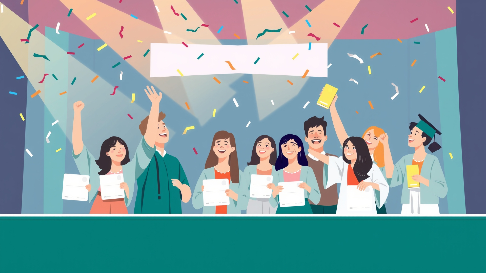
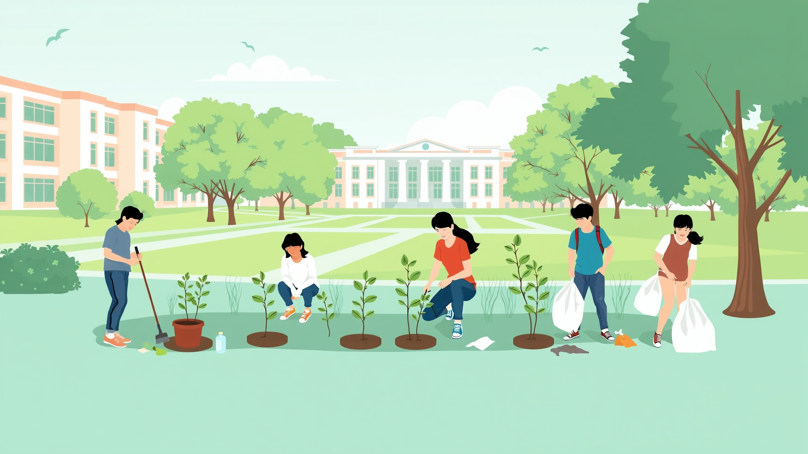
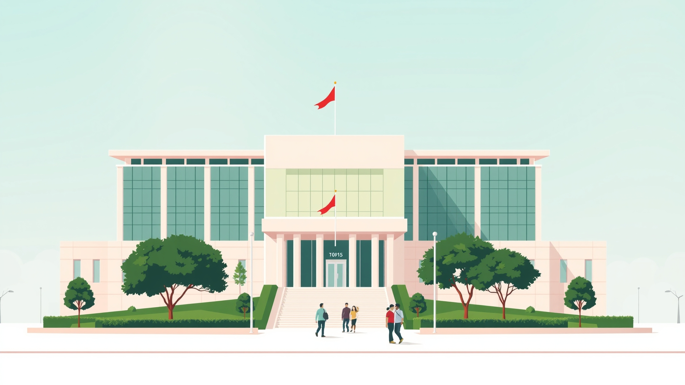
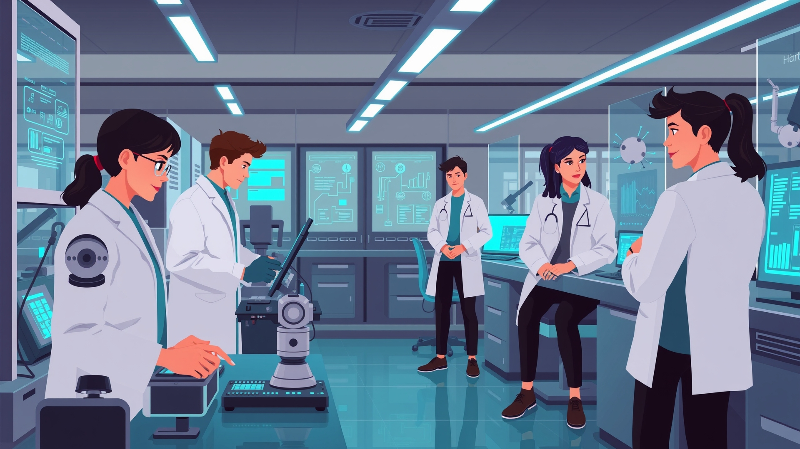
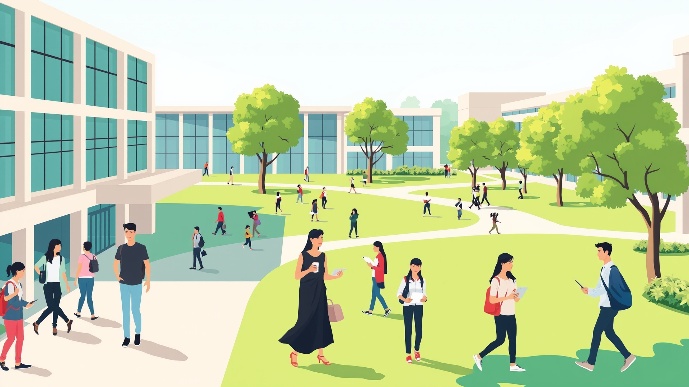
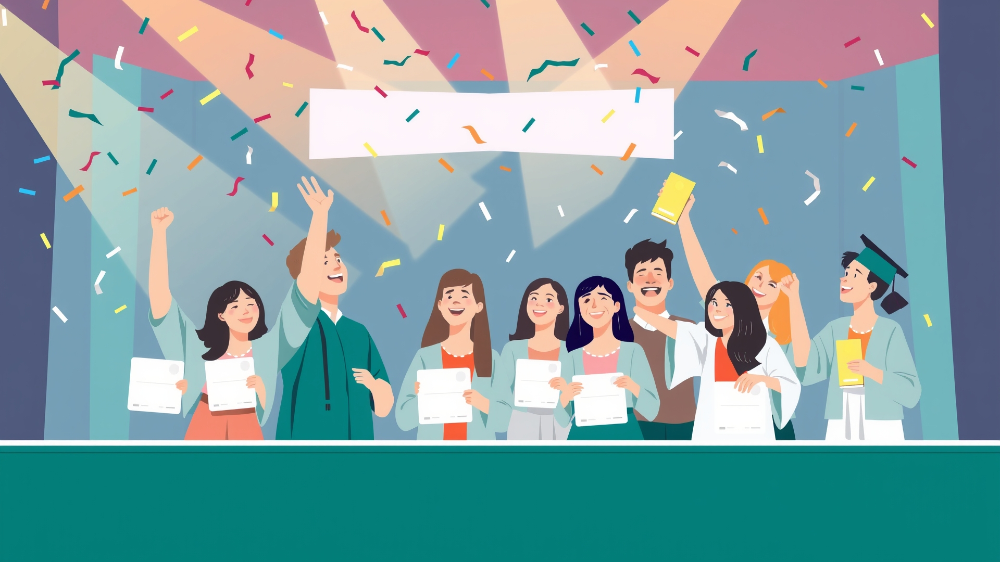
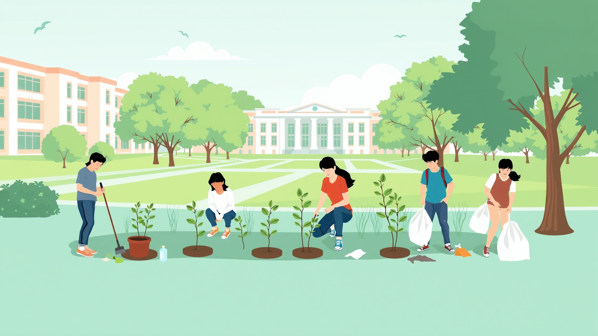
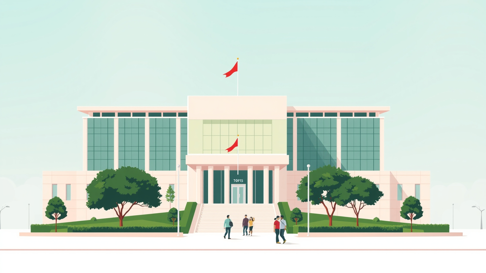
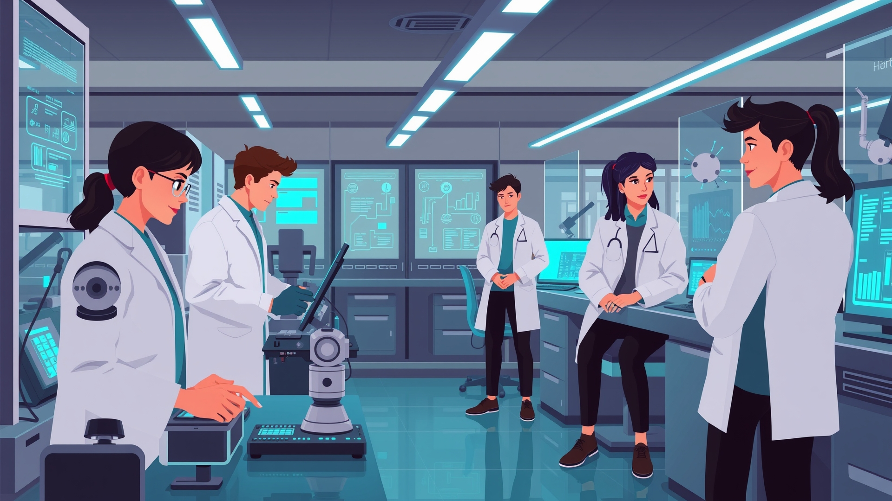
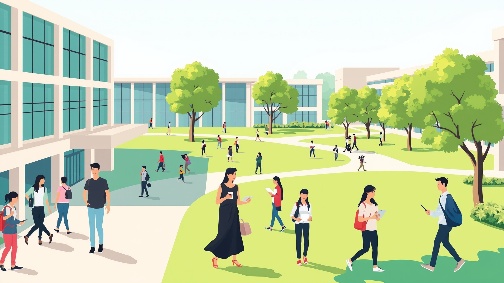

The FAST Coding Society has officially announced the 2025 Hackathon, set to take place in March. Students from all campuses are invited to participate and showcase their skills in AI, app development, and problem-solving challenges.
The official graduation ceremony will be held on December 22nd at the Islamabad Campus auditorium. Graduating students are requested to confirm attendance and gown collection details by December 15th.
FAST Hub volunteers will conduct a clean-up drive across the Islamabad campus this weekend. Students interested in volunteering can register through the Contact Page.
The new AI and Data Science lab is now open for students. It’s equipped with modern GPU-powered systems and is located in Block B, Room 204. Access will be granted to registered research groups starting next week.
The Department of Computer Science is hosting the 2025 Research Conference, where students and faculty present innovative projects in AI, software engineering, and data analytics.
Abstract submission deadline: February 15, 2025
Faculty advisors: Dr. Mohammed Ali & Dr. Adil Majeed
The FAST Dramatics Club is holding auditions for the annual student play. All students are welcome to participate in acting, set design, and backstage roles.
Auditions: January 28–30, 2025
Venue: Seminar Hall, Block A
Contact the club for audition details.
FAST Islamabad has opened a new library wing with extended study zones, group discussion rooms, and a digital media section.
The upgraded space includes:
- 24/7 quiet study area
- 50+ new computing stations
- Access to IEEE, ACM, and Springer research databases
Students can access it from 8 AM to 10 PM daily.
The FAST Green Society is organizing a campus clean-up drive to promote sustainability and responsibility among students.
Date: November 25, 2025 Meeting Point: FAST Main Gate, 9:00 AM
Certificates will be awarded to all volunteers!
Sign up through the Google Form.
a FAST graduate from 2025 batch will launch RetroTech, a startup that will use AI to help local businesses automate customer support. The graduate will demand funds from investors in Islamabad.
His journey will inspire many — proving that FASTians are leading the way in Pakistan’s tech scene!
Read more on the Alumni Success Stories page.